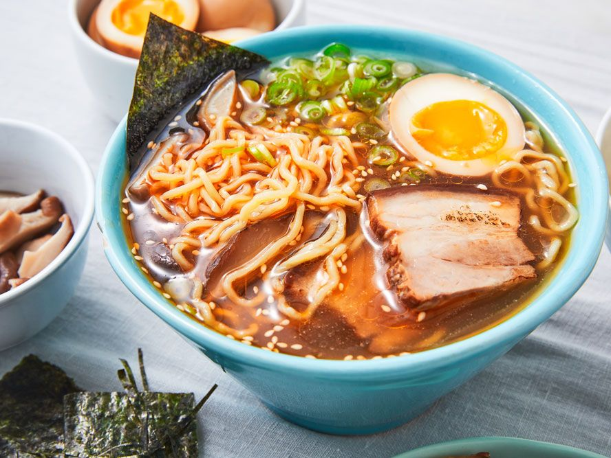

Delicious Ramen Recipe

Ingredients
Noodles
Broth
Vegetables
Water
Chicken
Spices
Instructions
Step 1:
Boil the noodles.
Step 2:
Prepare the broth.
Step 3:
Add vegetables and other ingredients.
Step 4:
Cook the chicken in the oil for 15 minutes
Step 5:
Add the chicken to the soup and let it cool down for 5 minutes